Holzinger–Swineford three-factor CFA
21 nodes · automatic placement with production modules
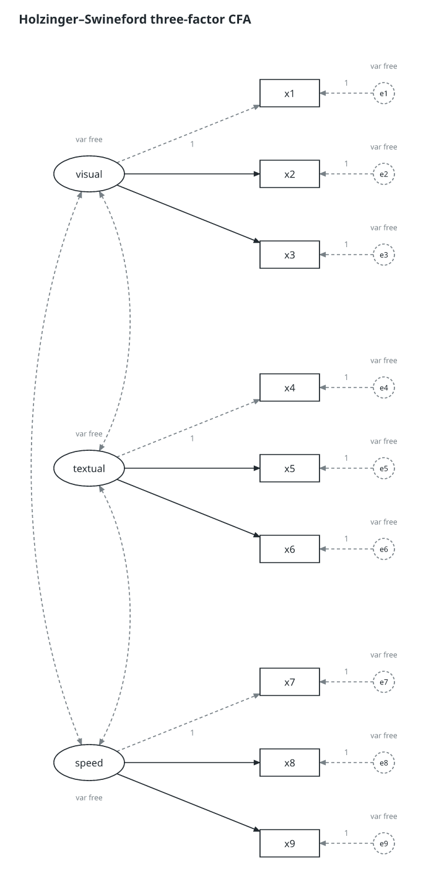
The seven fixed models, three fitted diagrams, Greek parameter notation, RAM variance loops and a fitted two-group CFA. No fixture-specific positions are supplied. PDF preserves vectors and embeds fonts; the SVG downloads include fonts. Dense models use larger physical pages to keep their text legible. The fitted diagrams use std.all estimates, R² and significance stars; those displays do not change the canonical table.
Public/synthetic analysis reports: CFA reliability and MI (Word) · LaTeX · Invariance sequence (Word) · LaTeX · Bootstrap mediation (Word) · LaTeX
21 nodes · automatic placement with production modules

27 nodes · automatic placement with production modules
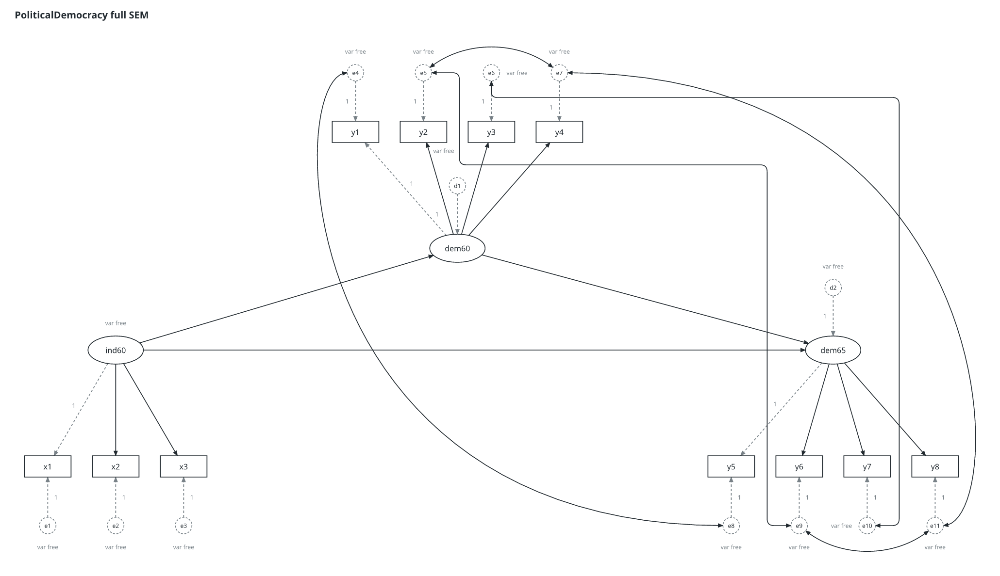
5 nodes · automatic placement with production modules
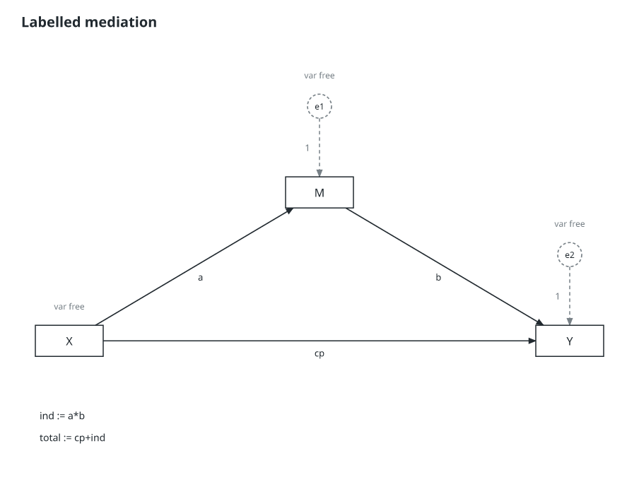
25 nodes · automatic placement with production modules
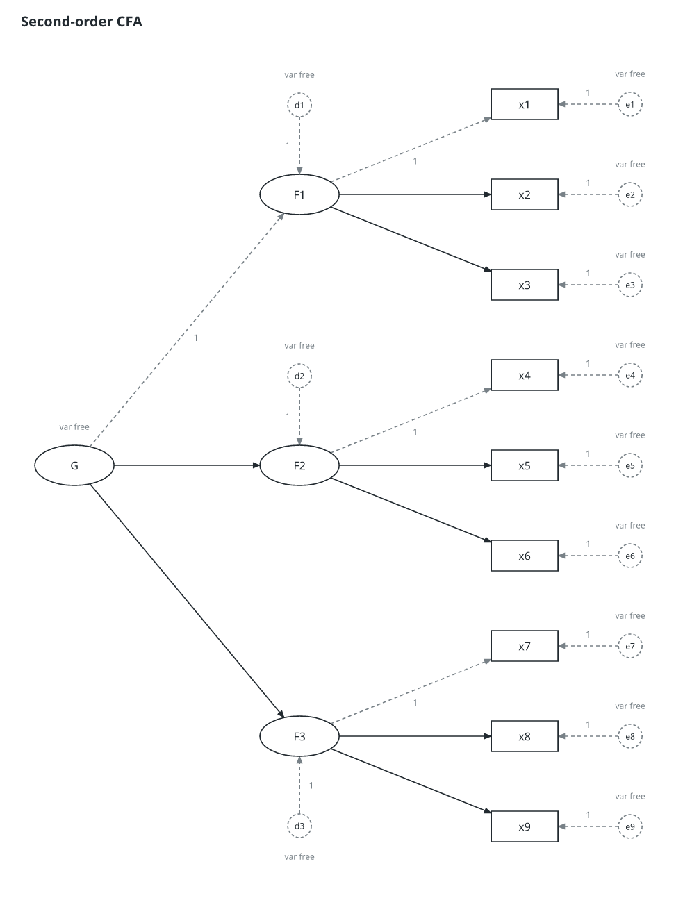
14 nodes · automatic placement with production modules
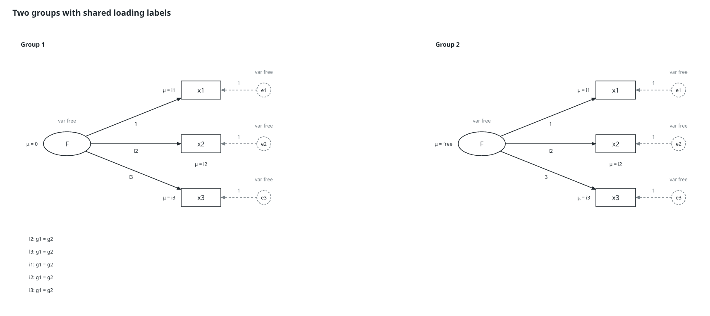
6 nodes · automatic placement with production modules
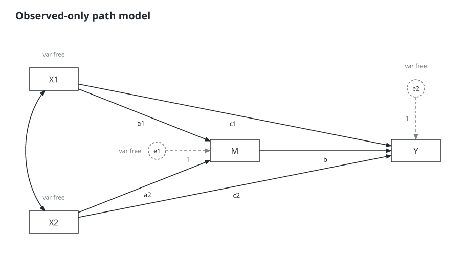
95 nodes · automatic placement with production modules
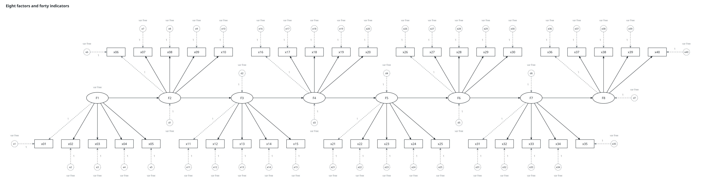
21 nodes · automatic placement with production modules
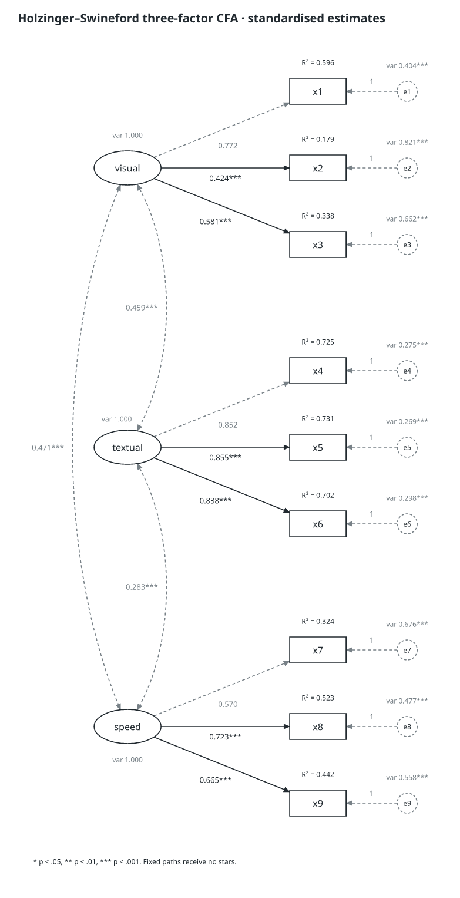
27 nodes · automatic placement with production modules
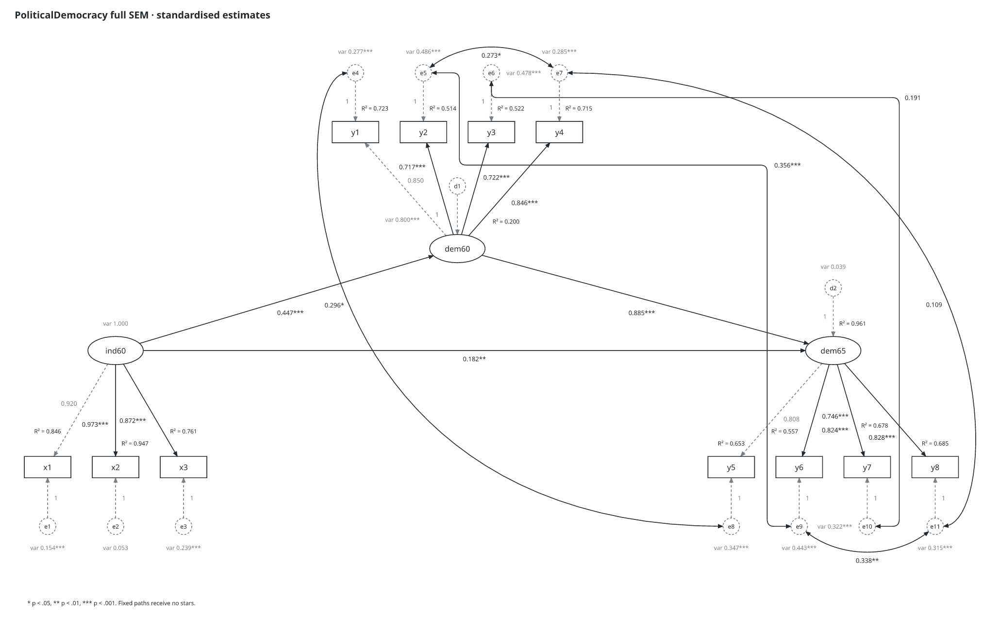
5 nodes · automatic placement with production modules
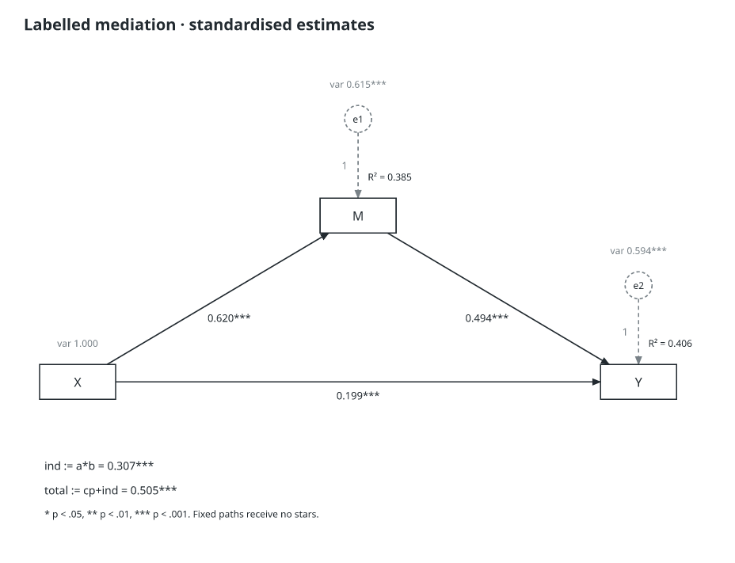
21 nodes · automatic placement with production modules
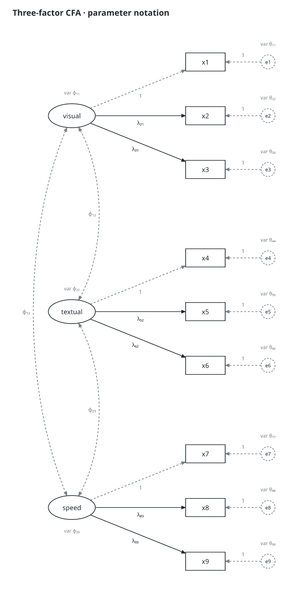
21 nodes · automatic placement with production modules
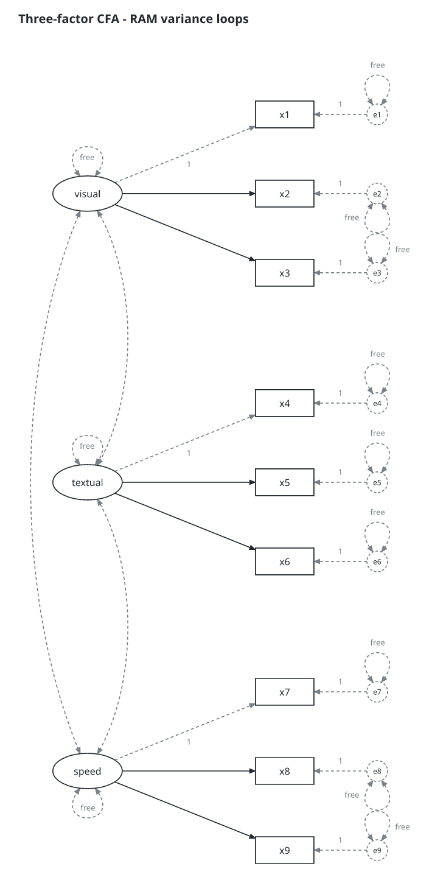
42 nodes · automatic placement with production modules
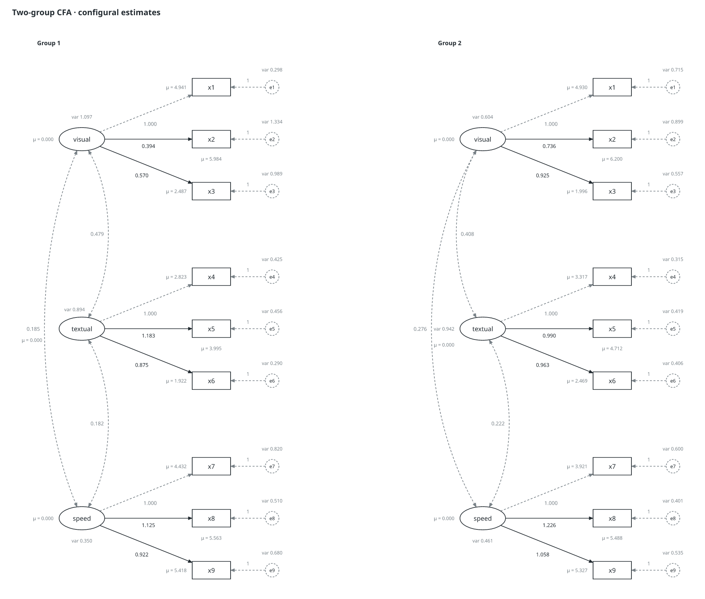